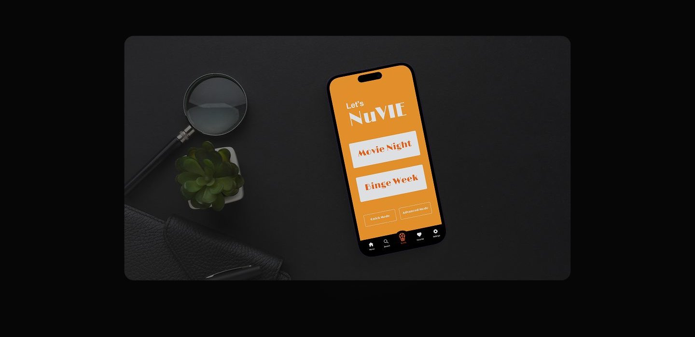
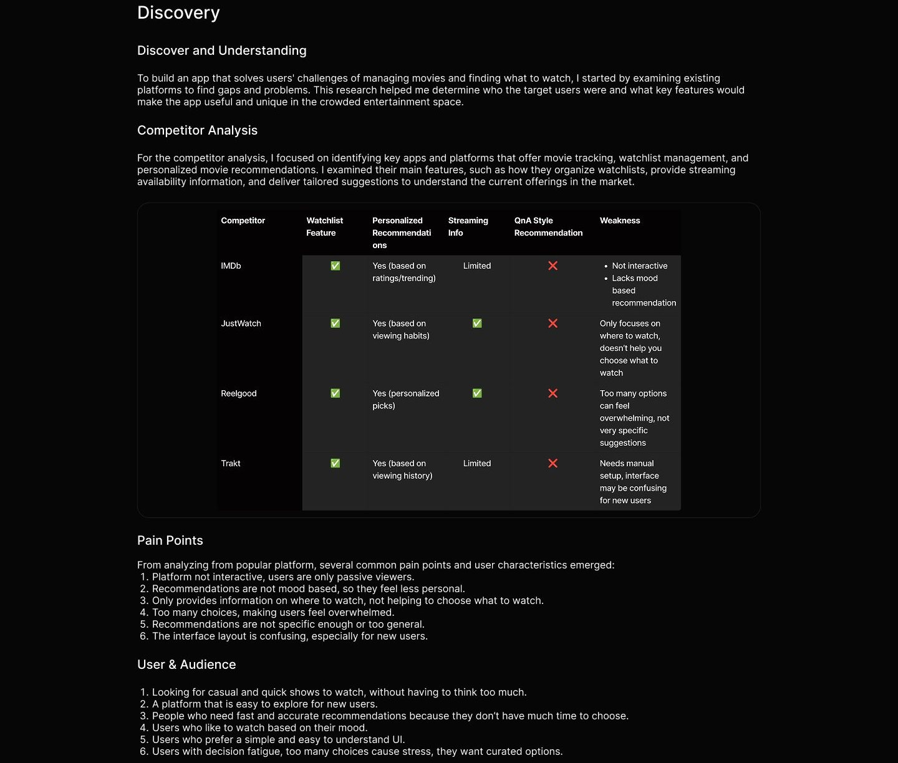
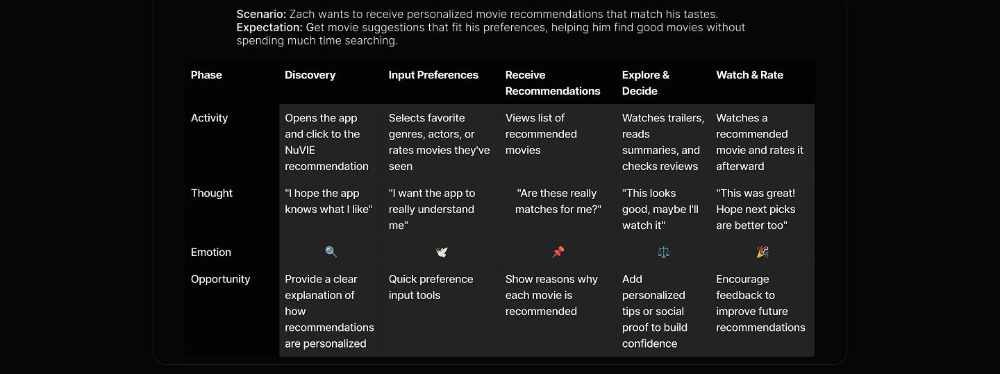
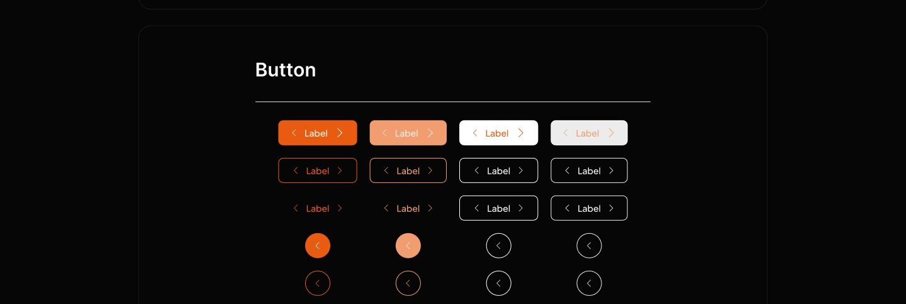
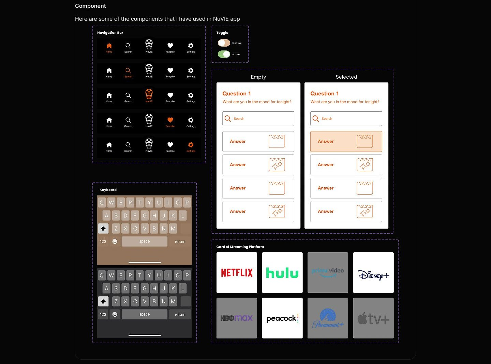
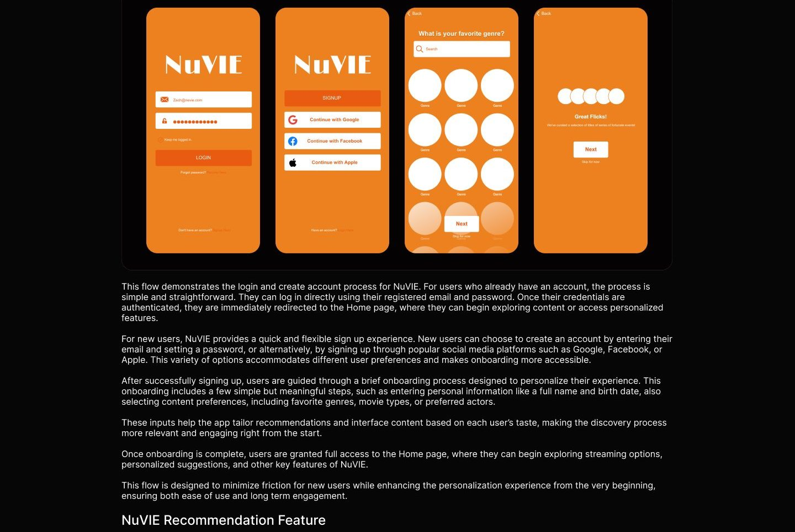
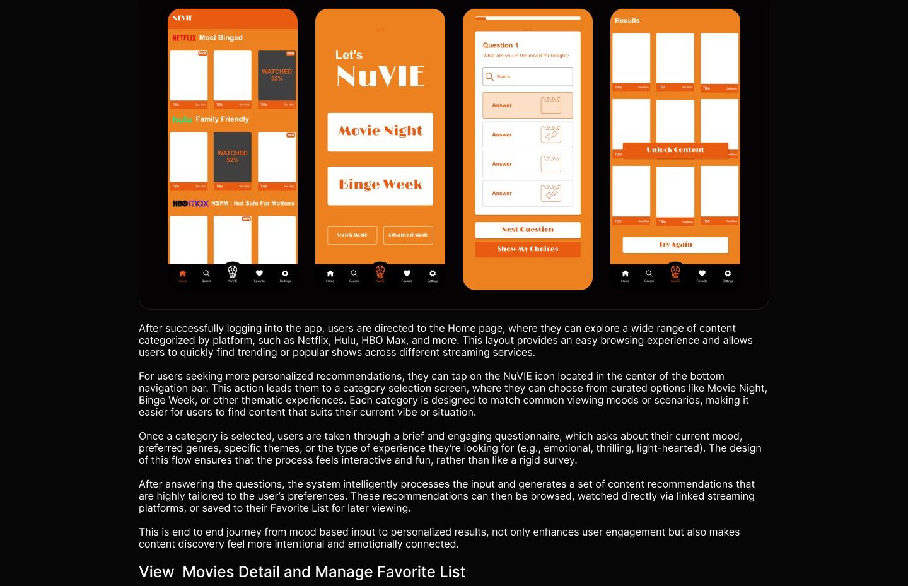
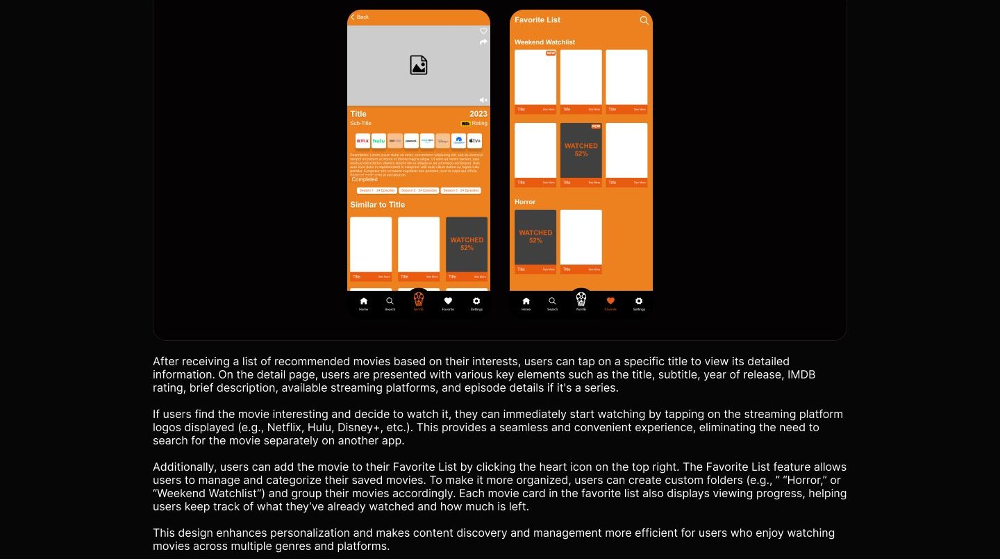

Mobile app
NuVIE
Watch. Track. Repeat.

Overview
This project is a movie list app designed to help users organize their watch lists more easily, discover where movies are available to watch, as well as get personalized recommendations through short questions. With this feature, users don't have to spend a long time looking for a movie that suits their genre preference or mood. This app comes as a solution to the confusion of choosing and managing watchlists the many options from various streaming platforms.
Problem
- Too many streaming platforms make users confused about finding movies.
- It's hard to keep track of movies you've watched or want to watch without a well organized system.
- Movie recommendations from platforms are often irrelevant or too general.
- Users often experience confusion in choosing what to watch because there are too many options without targeted help.
Solution
- An app to organize watchlists and bookmark movies that have already been watched.
- Streaming location information for each
- Personalized movie recommendations through questions about mood and preferences.
- Simple and intuitive design for a more focused and enjoyable viewing experience.
My role
For this project, I worked as a UX/UI Designer, focusing on creating a seamless experience for users to organize their movie watchlists and receive personalized film recommendations. I managed the full design process, starting with researching user challenges and analyzing competitors, then mapping user journeys and flows, developing wireframes, and finally prototyping using Adobe XD. My main focus was to design a clean and user friendly interface, which simplifies the process of selecting movies and managing watchlists, thereby increasing overall user satisfaction.
Process
1. Discovery The first step was to conduct a competitor analysis to understand the existing features and find gaps or opportunities for improvement. From here, I defined the user pain points and defined the target audience that the app would focus on. 2. Ideation Based on the insights from discovery, I created a user flow and user journey to map out the user's steps in using the app and understand their overall experience. This helps to ensure that the features designed actually fit the user's needs. 3. Design Process At this step, 1 built a design system that included typography, color guides, and UI components such as buttons. then I created wireframe and interactive prototypes in Figma with a focus on visual consistency and ease of use. 4. Usability Testing I created scenarios and testing tasks to simulate how users would interact with the app. These scenarios aimed to test key flows such as adding movies to watchlist, searching for movies, and receiving recommendations.

Ideation
User Flow
For the user flow, 1 outlined the typical journey users take to organize their watchlists, discover where to stream movies, and receive personalized recommendations through simple questions. The flow covers key actions such as logging in, searching or browsing movies, adding titles to their watchlist, answering preference questions for tailored suggestions, and checking streaming availability. This mapping helped ensure the app provides a smooth and straightforward experience, guiding users efficiently to find and manage movies they want to watch.
User story: As a user, I want to receive personalized movie recommendations because I want to quickly find movies that match my taste
Watch movies NuViE via Now manis Preference Homepage account? question recommended platforms
Success
Sign Up Login
User Journey
This section illustrates the typical experience of a content creator using the app, from finding potential collaborators to completing the journey and sharing content. Based on the pain points identified through competitor analysis, this journey highlights real user frustrations and expectations, helping to shape features that prioritize safety, trust, and seamless collaboration.

Design system
Having recognized the user's frustrations and key pain points throughout their journey, I concentrated on developing core functionalities that address these concerns. The goal was to create an experience that is easy to use, personalized, and helps users discover movies that truly match their preferences.
Design System To keep the visuals consistent and enhance efficiency, I established guidelines for colors, fonts, and general styling throughout the project.
Neutral colors
Neutral 50 Neutral 500 Neutral 200 Neutral 300 Neutral 400 Neutral 700 Neutral 600 Neutral 100 HAB4B48 1202020 1202070
Typography
Arial ABCDEFGHIJKLMNOPQRSTUVWXYZ abcdefghijklmnopqrstuvwxyz 1234567890
Font size/weight Style
44/Regular Heading Title 1 24/Bold Title 2 20/Bold 16/Regular Body 1 Body 2 12/Regular 10/Regular Sub Body 1 Sub Body 2 8/Regular


Final design
Authentication & Onboarding Flow



Usability testing
To evaluate the effectiveness and usability of NuVIE, I conducted a usability testing session by preparing a realistic scenario along with task-based activities. The goal was to understand how users interact with the app, identify pain points, and validate whether the designed features align with user needs and expectations. Below is the scenario and a series of tasks given to participants during the testing: 1. You heard about an app that offers personalized movie recommendations based on user preferences, so you downloaded it. As a new user, you need to answer a few preference questions. What would you do? 2. After reaching the homepage, you see many types of movies and feel overwhelmed. You want to find a movie that matches your current preferences. What steps would you take to find it? 3. After receiving your movie recommendations, you want to check the details of a specific movie. How would you do that? 4. You are interested in one of the recommended movies and want to watch it immediately. What can you do? 5. You're also interested in several other movies and would like to save them for later. What would you do to make sure they're stored? 6. You've successfully saved a list of movies you want to watch later, but the list looks unorganized. You want to organize them based on genres. How would you do that? These tasks were designed to simulate real user goals, ranging from onboarding, navigating content, discovering recommendations, and organizing favorite movies. The test sessions helped validate whether the app's key features, such as personalized recommendations, direct streaming access, and organized favorite lists were easily discoverable and intuitive to use. Through this process, I was able to gain valuable feedback regarding both the user flow and the overall user experience. The insights collected were used to further refine the interface, improve usability, and ensure that the solution truly addresses the initial problem, helping users find movies they enjoy without feeling overwhelmed.
Reflection
If I had additional time to further develop this project, my main focus would be: 1. Continue gathering user feedback with a focus on identifying less obvious challenges users face. 2. Test the prototype in real use scenarios to confirm the ease of navigation and uncover any friction areas. 3. Update and polish the design based on testing outcomes to deliver a more intuitive and enjoyable experience.
Full case study
The complete annotated board lives in Figma, with every flow, wireframe, and screen.